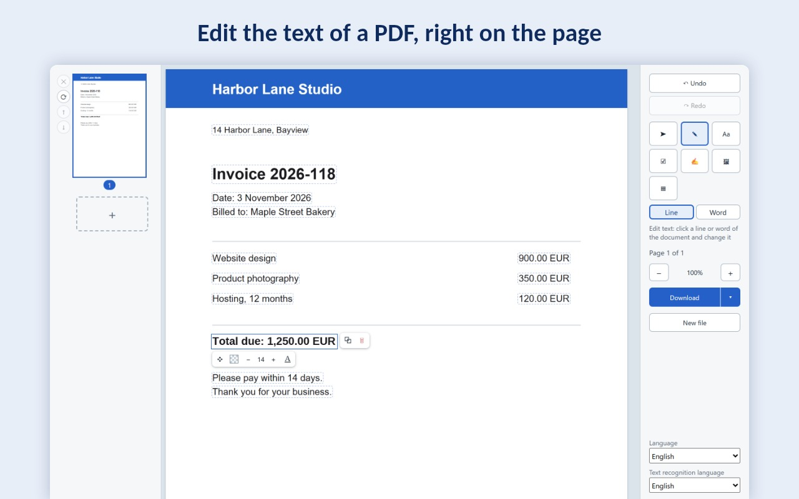
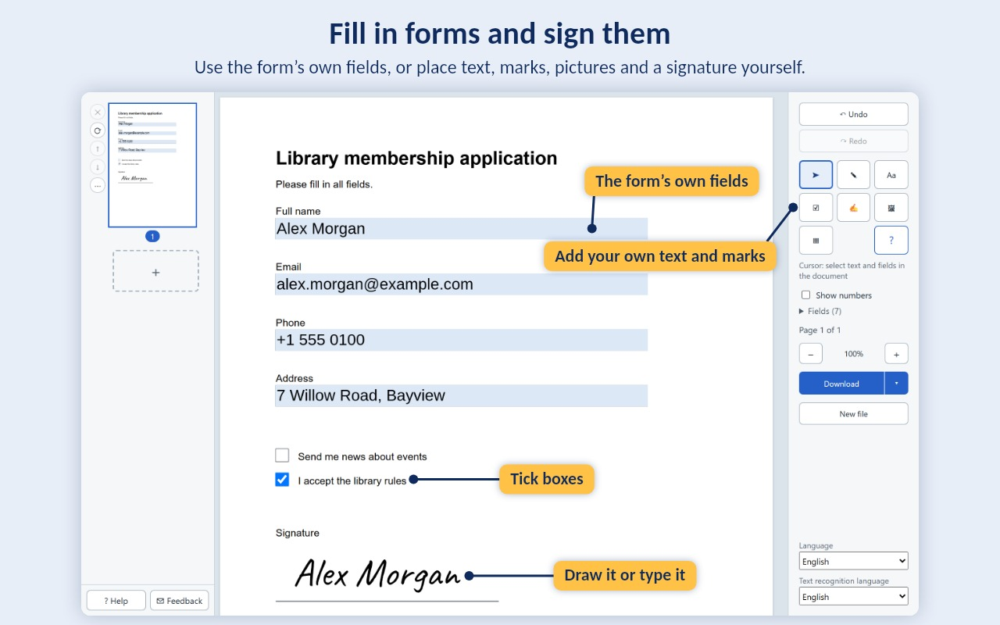
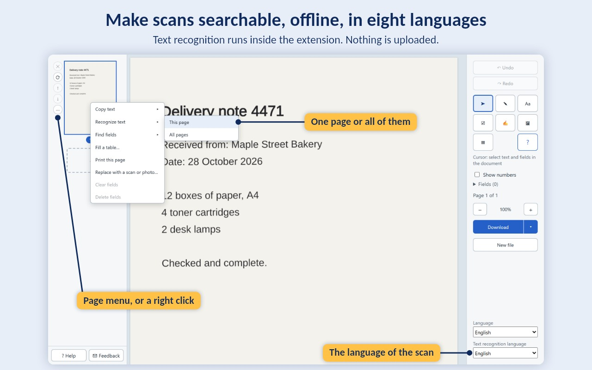
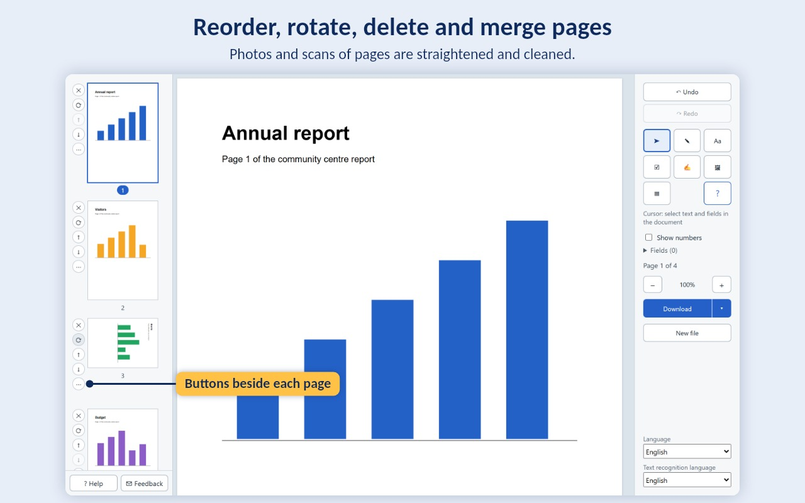

PDF-Formulare ausfüllen, ohne sie hochzuladen
LocalPDF ist ein kostenloser PDF-Editor, der Ihre Dokumente auf Ihrem Computer lässt. Kein Konto, keine Server, kein Netzwerkzugriff: Ihre Dateien verlassen Ihren Rechner nie. Gerade für Anträge, Formulare von Ämtern und Verträge mit persönlichen Daten.
Dies ist eine Beta. Prüfen Sie das Ergebnis und behalten Sie Ihre Originale.
Was es kann
- Formulare ausfüllenDie Felder des PDFs selbst oder eigene Felder: Text, Häkchen, Kreuze, Unterschriften und Bilder.
- Tabelle auf einem Scan ausfüllenZeilen aus einer Excel- oder CSV-Datei oder aus einer Tabelle eingefügt kommen in die leeren Zellen eines gescannten Formulars.
- Text direkt bearbeitenZeile oder Wort anklicken und neu tippen, in der Schrift des Dokuments, wenn die Datei sie enthält.
- Text wirklich entfernenErsetzter Text wird aus der gespeicherten Datei herausgeschnitten, nicht nur überdeckt.
- Mit einer beliebigen KI ausfüllen, ohne InternetDie nummerierten Felder in den KI-Chat Ihrer Wahl kopieren und die Antwort wieder einfügen. LocalPDF selbst sendet nichts.
- Scans erkennenTexterkennung ohne Internet in acht Sprachen macht Scans durchsuchbar.
- Seiten verwaltenSeiten löschen, drehen und umsortieren, PDFs und Bilder zusammenfügen, das Foto einer von Hand unterschriebenen Seite einsetzen.
Bildschirmfotos





Die Bildschirmfotos zeigen die englische Oberfläche. LocalPDF gibt es auch auf Deutsch.
Ihre Privatsphäre
LocalPDF sammelt, sendet und teilt keine Daten. Die Windows-App blockiert alle Netzwerkanfragen nach außen. Die Browser-Erweiterung verlangt keine Berechtigungen und kann sich mit keiner Website verbinden. Texterkennung, Schriften und alles andere laufen auf Ihrem Computer.
Diese Seite verwendet keine Cookies, keine Zähler und keine fremden Skripte oder Schriften.